Version：nut-plugin 6.0.7-1
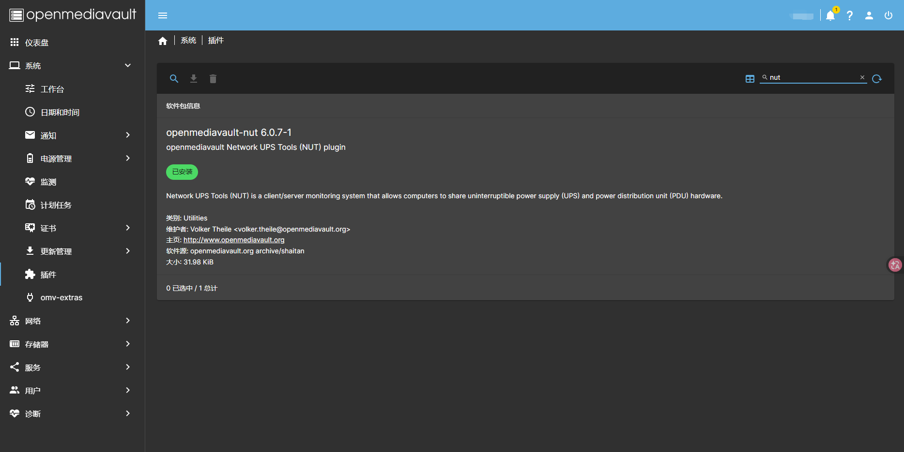
# 介绍
Network UPS Tools （NUT）是一种客户端 / 服务器监控系统，允许允许计算机共享不间断电源（UPS）和配电单元（PDU）硬件。
# 安装
在 OMV Web 的 系统 -> 插件 的搜索栏中搜索 nut ，然后点击安装即可。
# 使用
在 OMV Web 的 服务 -> UPS 中，按需配置，如本人使用的 APC BK650M2-CH 设备为例：
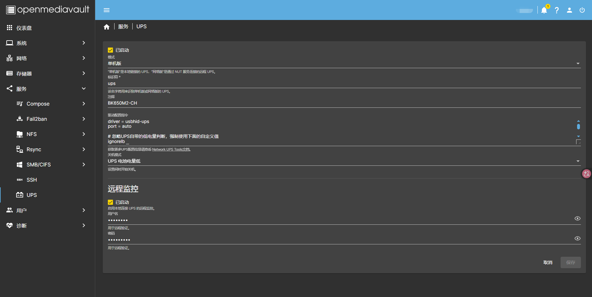
配置命令一般默认为：
driver = usbhid-ups | |
port = auto |
对于 driver 字段，可以在 Hardware compatibility list 中选择自己的 UPS 型号（一般常见的设备都能找到）即可查询到：
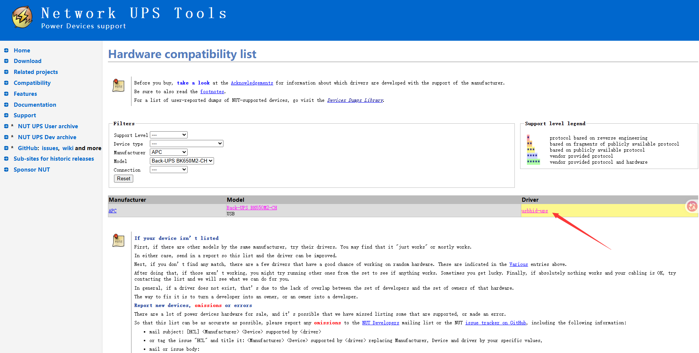
而 port 字段，则一般保留为 auto ，因为只要能识别到驱动，基本都没问题，像在这里，因为 BK650M2-CH 是使用 USB 连接的，因此可以使用命令查看驱动：
lsusb | ||
Bus 002 Device 001: ID 1d6b:0003 Linux Foundation 3.0 root hub | ||
Bus 001 Device 008: ID 051d:0002 American Power Conversion Uninterruptible Power Supply | ||
Bus 001 Device 001: ID 1d6b:0002 Linux Foundation 2.0 root hub |
额外的，如果你想修改一些 ups 配置属性，例如：
# 忽略UPS自带的低电量判断，强制使用下面的自定义值 | |
ignorelb | |
# 电池电量低于35%触发低电 | |
override.battery.charge.low = 35 | |
# 剩余运行时间低于300秒（5分钟）触发低电 | |
override.battery.runtime.low = 5 | |
# 输入灵敏度（可选值：low/medium/high） | |
override.input.sensitivity = low | |
# 输入电压上限（超过则切换到电池） | |
override.input.transfer.high = 278 | |
# 输入电压下限（低于则切换到电池） | |
override.input.transfer.low = 160 | |
# 关机前等待120秒 | |
override.ups.delay.shutdown = 120 |
属性配置可参考：https://forum.openmediavault.org/index.php?thread/8432-nut-not-turning-server-off-if-ups-reaches-low-battery-is-set-working-with-ups-go/
如果你像这样使用 UPS 使用电池供电 模式：
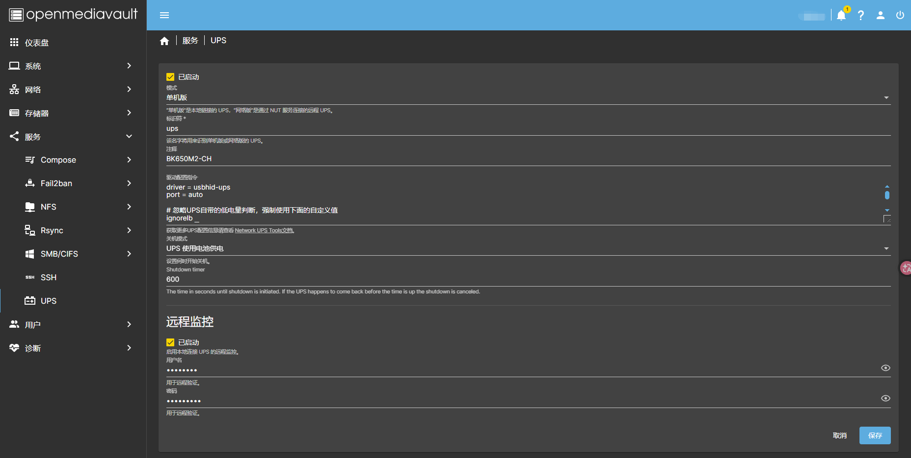
那么，主机会无视 UPS 发出命令，只监视是否转换成电池供电，一旦处于电池供电将会进入下面的关机倒计时，待计时结束仍然没切换成市电那就执行关机处理。
需要注意的是：OMV 的 NUT (Network UPS Tools) 插件本身不提供 Web 用户界面；因此即使你直接 web 访问 3493 端口也无法出现 web-ui 图形监管，如有需要请看下面的 Web-UI 部署。
NO, port 3493 is for comunications between NUT server and UPS, not a webGUI Port.
查看：https://forum.openmediavault.org/index.php?thread/40817-should-nut-have-a-webui/
部分对于第三方需要操作 UPS 的客户端，像后面的 Web-UI 查看及管理，如果直接用 远程监控的用户密码 ：
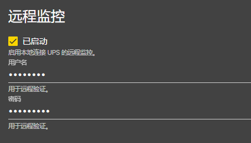
那么，你只有参看操作，并没有控制权，而 OMV Web 这里又没有权限操作，因此需要你自己在 /etc/nut/upsd.users 文件中添加权限属性，一般有三个：
| 操作类型 | 需要的权限 |
|---|---|
发送即时命令 (Instant Command) (如 test.battery.start.quick ) | 用户配置中必须包含 instcmds 字段 |
修改变量 (Set Variable) (如 battery.charge.low ) | 用户配置中必须包含 actions = SET |
| 执行强制关机 (FSD) | 用户配置中必须包含 actions = FSD |
具体可看：https://networkupstools.org/docs/man/upsd.users.html
当然，在 /etc/nut/upsd.users 中，你也可以看到 admin 账户密码并使用；但值得注意的是，每次在 OMV Web 上保存 UPS 的配置，该 /etc/nut/upsd.users 文件都会重置，因此不管是用 admin 账号 (密码将会重新生成) 还是手动为 远程监控的用户 添加属性 (权限将会被清除)，都要再次作处理：
# This file is auto-generated by openmediavault (https://www.openmediavault.org) | |
# WARNING: Do not edit this file, your changes will get lost. |
# Web-UI
# nut-webui
项目：https://hub.docker.com/r/gpdm/nut-webui
docker run -d \ | |
--name nut-webui \ | |
-e PUID=0 \ | |
-e PGID=0 \ | |
-e TZ=Asia/Shanghai \ | |
-p 28693:80 \ | |
-v ${PWD}/nut-config:/etc/nut \ | |
--restart unless-stopped \ | |
gpdm/nut-webui |
另外需要几个配置文件：
hosts.conf
# Network UPS Tools: example hosts.conf
#
# This file is used to control the CGI programs. If you have not
# installed them, you may safely ignore or delete this file.
#
# -----------------------------------------------------------------------
#
# upsstats will use the list of MONITOR entries when displaying the
# default template (upsstats.html). The "FOREACHUPS" directive in the
# template will use this file to find systems running upsd.
#
# upsstats and upsimage also use this file to determine if a host may be
# monitored. This keeps evil people from using your system to annoy
# others with unintended queries.
#
# upsset presents a list of systems that may be viewed and controlled
# using this file.
#
# -----------------------------------------------------------------------
#
# Usage: list systems running upsd that you want to monitor
#
# MONITOR <system> "<host description>"
#
# Examples:
#
# MONITOR myups@localhost "Local UPS"
# MONITOR su2200@10.64.1.1 "Finance department"
# MONITOR matrix@shs-server.example.edu "Sierra High School data room #1"
MONITOR apc@localhost "APC smart-UPS"
根据你实际信息更改连接地址
apc@localhost(其中 @ 前面的是 UPS 上的标识符) 和备注信息"APC smart-UPS"。配置参考：https://github.com/gpdm/nut/blob/master/nut-webui/files/etc/nut/hosts.conf
upsset.conf
# Network UPS Tools - upsset.conf sample file
#
# This file is provided to ensure that you do not expose your upsd server
# to the world upon installing the CGI programs. Specifically, it keeps
# the upsset.cgi program from running until you have assured it that you
# have secured your web server's CGI directory.
#
# By default, your web server will probably let anyone access upsset.cgi
# once it is installed. This means that anyone could attempt to crack
# upsd logins since they would appear to be coming from your web server,
# rather than the outside world, slipping through any ACL/ACCESS definitions.
#
# For this reason, you *MUST* first secure your CGI programs before
# enabling upsset in this configuration file. If you can't do this in
# your web server, then you should *not* run this program.
#
# For Apache, the .htaccess file can be used in the directory with the
# programs. You'll need something like this:
#
# <Files upsset.cgi>
# deny from all
# allow from your.network.addresses
# </Files>
#
# You will probably have to set "AllowOverride Limit" for this directory in
# your server-level configuration file as well.
#
# If this doesn't make sense, then stop reading and leave this program alone.
#
# Assuming you have all this done (and it works), then you may uncomment
# the line below and start using upsset.cgi through your web browser.
#
###
### I_HAVE_SECURED_MY_CGI_DIRECTORY
###
配置参考：https://github.com/gpdm/nut/blob/master/nut-webui/files/etc/nut/upsset.conf
other
curl -O "https://raw.githubusercontent.com/gpdm/nut/master/nut-webui/files/etc/nut/upsstats.html"
curl -O "https://raw.githubusercontent.com/gpdm/nut/master/nut-webui/files/etc/nut/upsstats-single.html"
配置完后需要重启一下容器让其重新读入配置：
docker restart nut-webui |
状态展示：
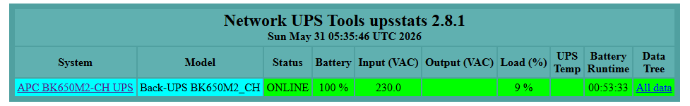
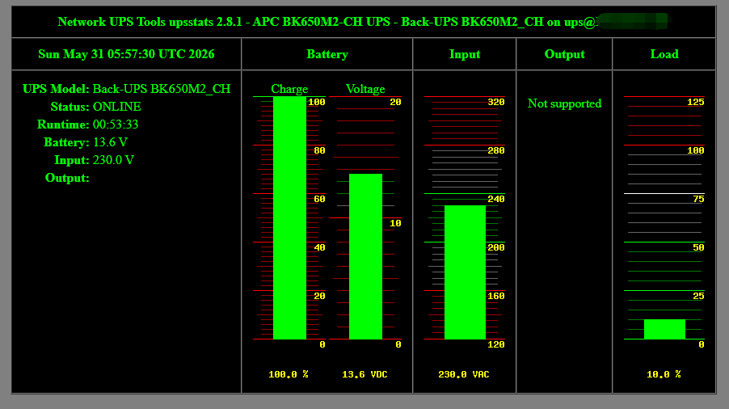
# PeaNUT
项目：https://github.com/Brandawg93/PeaNUT
docker run -d \ | |
--name peanut \ | |
-e PUID=0 \ | |
-e PGID=0 \ | |
-e TZ=Asia/Shanghai \ | |
-e WEB_PORT=8080 \ | |
-v ${PWD}/config:/config \ | |
-p 28693:8080 \ | |
--restart unless-stopped \ | |
brandawg93/peanut |
需要注意的是，如果需要更换端口，只需要修改 -p port:8080 中的端口， WEB_PORT 字段是不需要修改的，参考：https://github.com/Brandawg93/PeaNUT/issues/48 。
创建登录用户：
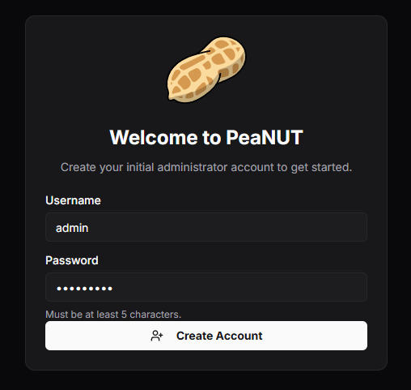
进来后第一次需要配置你的 UPS 设备交互信息，然后点击 "Apply" ：
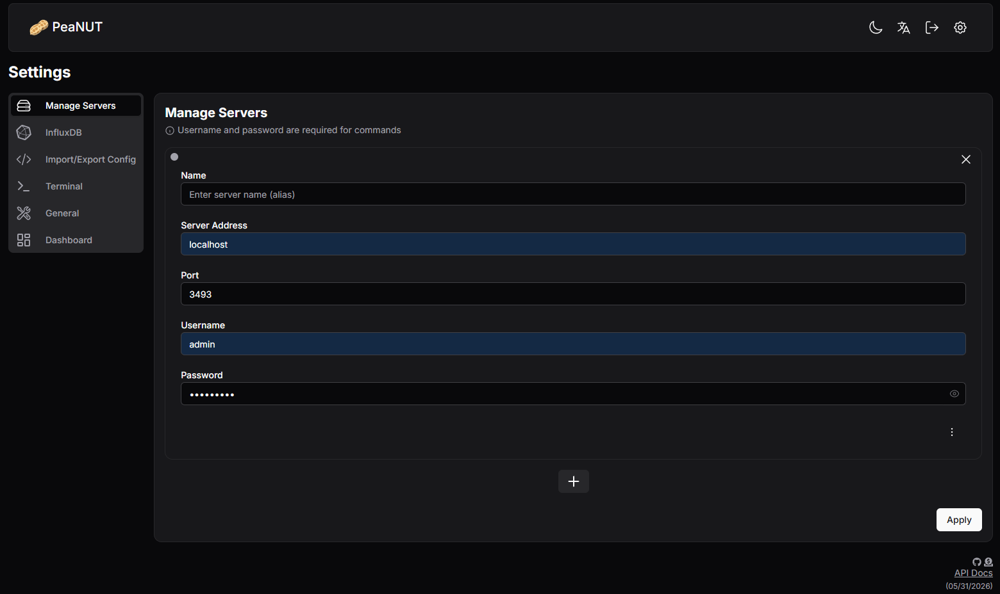
因为是在容器里，在 Server Address 中填写 localhost ，是会连失败的，因此可以填写你主机实际 ip (eg： 192.168.xxx.xxx ，或者使用 docker0 网桥的默认 ip: 172.17.0.1 ) ，当成功后左上角的状态将会显示绿色：
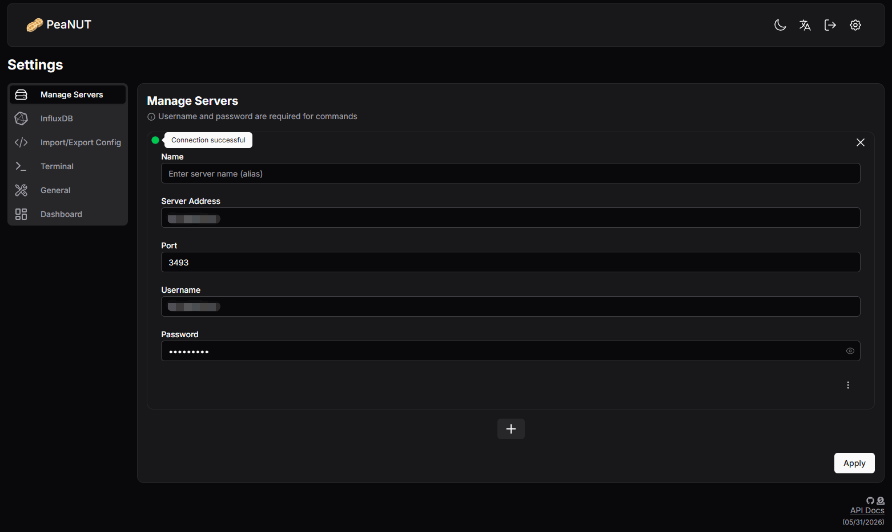
状态展示：
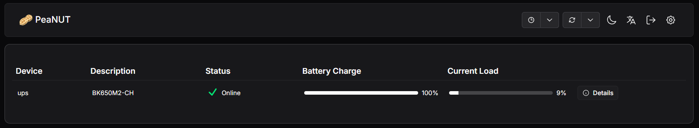
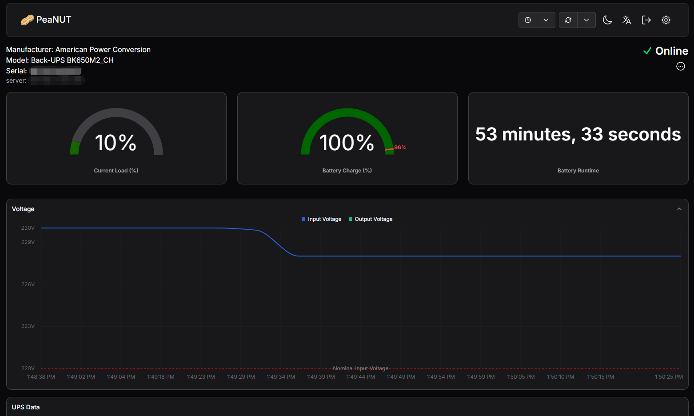
帖子：https://www.reddit.com/user/brandawg93/search/?q=peanut%3A+a+tiny+dashboard+for+network+ups+tools&cId=c0e599a4-1229-4805-bb6c-718ad427b79d&iId=d27db876-c33e-4e1d-9f23-952bd6a280e6
# Nutify
项目：https://github.com/DartSteven/Nutify
创建 docker-compose.yaml 文件：
vim docker-compose.yaml |
写入：
services: | |
nut: | |
# Container image | |
image: dartsteven/nutify:amd64-latest # Nutify image version | |
container_name: Nutify # Static container name for easy reference | |
# Privileges required for | |
# direct UPS and USB device access | |
privileged: true # Broad hardware access for NUT and USB integration | |
cap_add: | |
- SYS_ADMIN # Extended system administration capabilities | |
- SYS_RAWIO # Raw hardware I/O access | |
- MKNOD # Create special device files if needed | |
# USB device mapping | |
devices: | |
- /dev/bus/usb:/dev/bus/usb:rwm # Map host USB bus into the container | |
device_cgroup_rules: | |
- 'c 189:* rwm' # Allow all USB character devices | |
# Persistent storage and host integration | |
volumes: | |
- ./Nutify/logs:/app/nutify/logs # Application logs | |
- ./Nutify/instance:/app/nutify/instance # Persistent app data and runtime files | |
- ./Nutify/ssl:/app/ssl # SSL certificates and private keys | |
- ./Nutify/etc/nut:/etc/nut # NUT configuration directory | |
- /dev:/dev:rw # Full device tree access for hardware detection | |
- /run/udev:/run/udev:ro # Udev event access for hotplug monitoring | |
# Runtime environment | |
environment: | |
- SECRET_KEY=test1234567890 # Secret key used for sessions and encrypted values | |
- UDEV=1 # Enable udev-aware USB detection mode | |
- LOG=true # Enable general application logging: true/false, default is false | |
- LOG_LEVEL=INFO # Accepted values currently are DEBUG, INFO, WARNING, ERROR, CRITICAL | |
- LOG_WERKZEUG=true # Enable Werkzeug HTTP/server logs: true or false, default is false | |
- ENABLE_LOG_STARTUP=Y # Valid values are Y or N, default is N, any other value is treated as N | |
- SSL_ENABLED=false # true or false, default is false | |
# DNS resolvers | |
dns: | |
- 1.1.1.1 # Cloudflare DNS | |
- 8.8.8.8 # Google DNS | |
dns_opt: | |
- timeout:2 # DNS timeout per query | |
- attempts:2 # Retry count before failure | |
# Exposed ports | |
ports: | |
#- 3493:3493 # NUT daemon communication port | |
- 28693:5050 # Nutify application port | |
#- 443:443 # HTTPS secure web access | |
restart: unless-stopped # Keep the service running across failures/reboots | |
user: root # Root required for full device and NUT access |
note：
注意端口冲突，在这里由于 443 挂载的 OMV 网页，3493 则是 OMV 的 nut-plugin 插件使用，因此对于充当 Web-UI 来说，实际并不需要。
初始化配置：
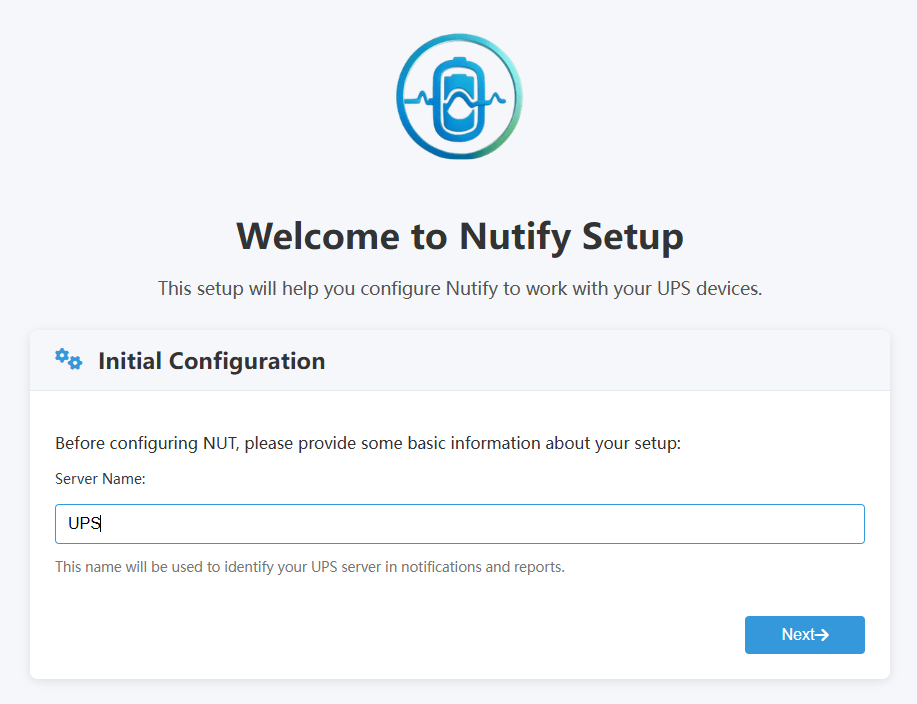
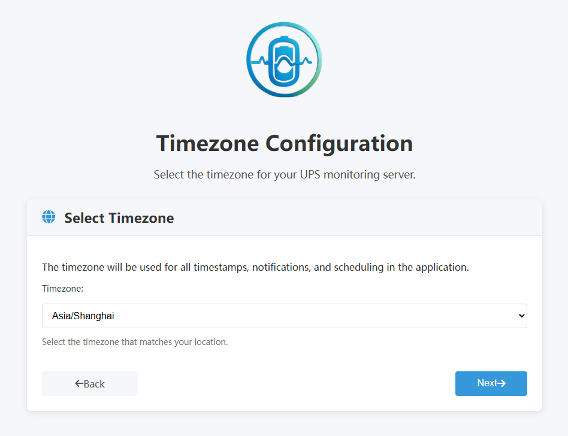
然后按步骤走。
为其访问创建登录用户：
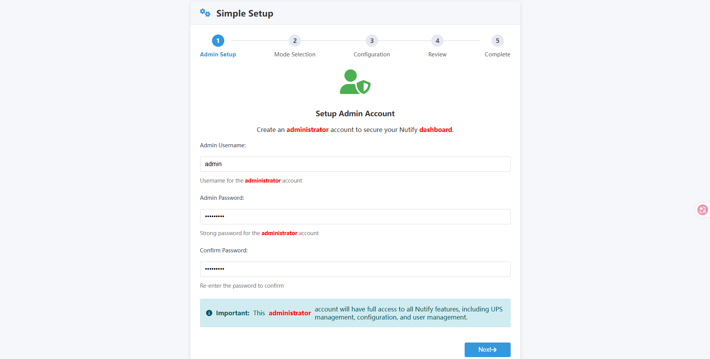
由于我们是在 OMV 上已经使用 nut-plugin 开启了 server 服务，在容器这里只需接入服务来充当 Web-UI ，所以选择 Network Client 模式：
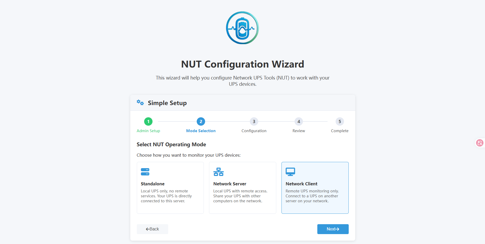
接着核对信息并 Test：
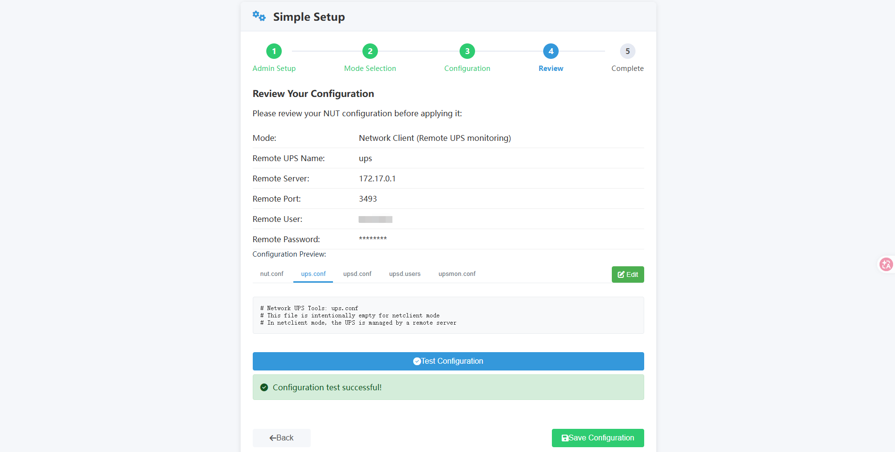
最后 Restart ，等待重启：
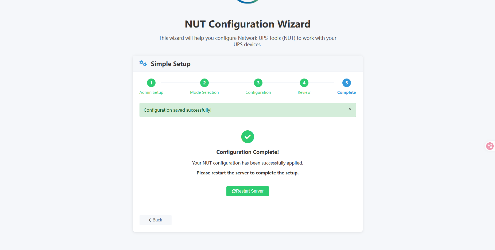
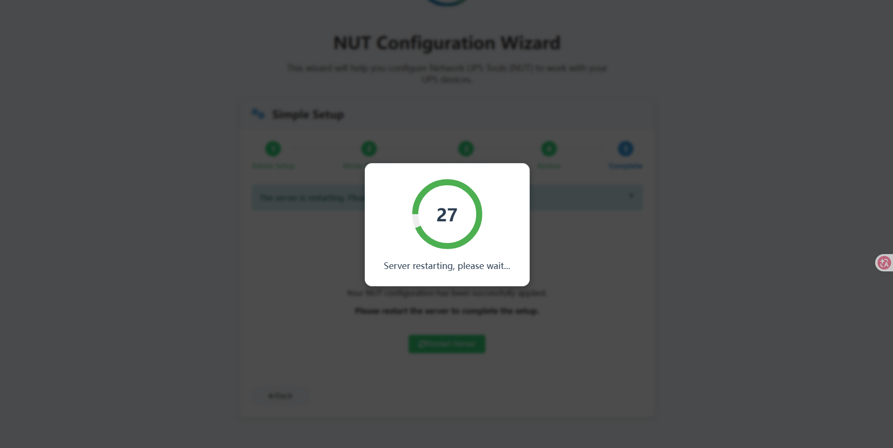
重启后登录刚才的账号：
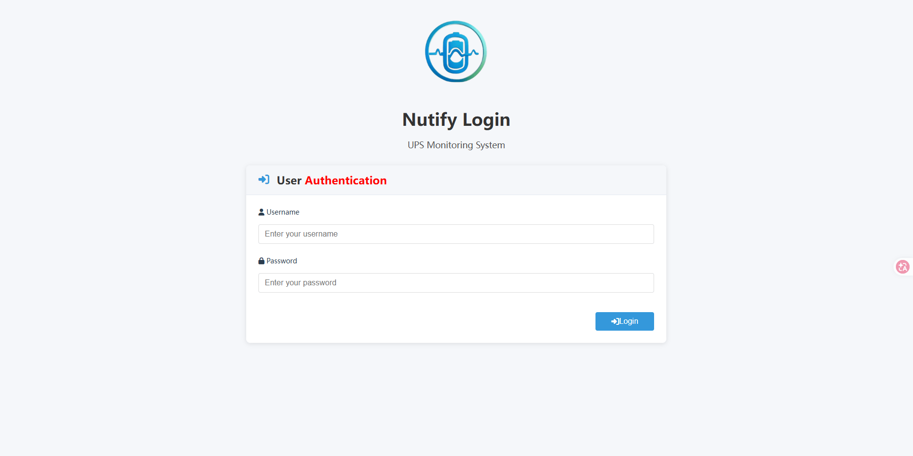
ps：
如果不用 OMV 的 nut-plugin 插件，可以使用 Standalone 模式，然后进行配置（注意：记得在前面 docker-compose.yaml 配置中配置 NUT daemon communication port 的端口映射）：
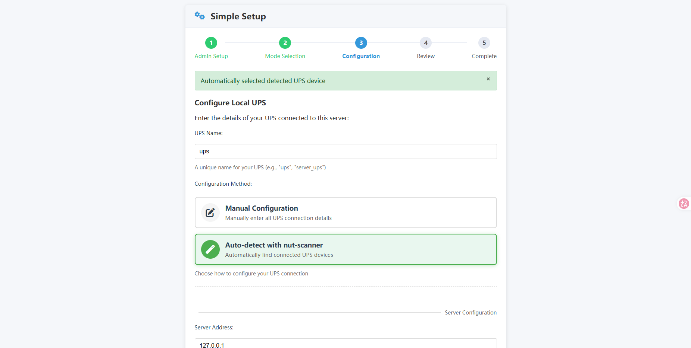
如果使用 Standalone 模式，由于是把设备和网络跟宿主机互通了，因此只要有设备，都可以直接 auto 检测出来。
状态展示：
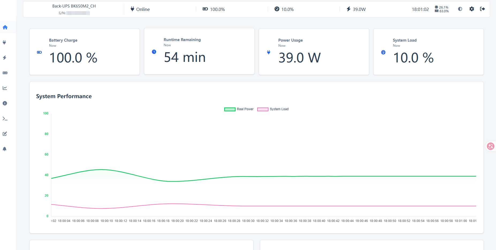
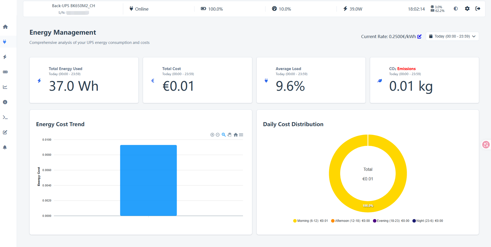
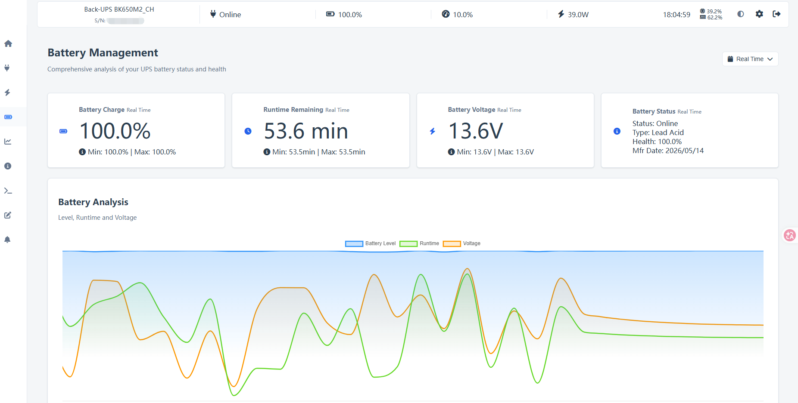
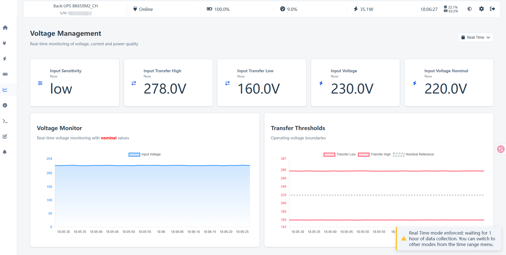
剩下的其它功能就自己去体验吧。
帖子：https://www.reddit.com/r/selfhosted/comments/1j4x1p1/nutify_a_dockerized_nut_server_with_email_and/?tl=zh-hans
# nut_webui
项目：https://github.com/SuperioOne/nut_webgui
docker run -d \ | |
--name nut_webui \ | |
-e TZ=Asia/Shanghai \ | |
-e UPSD_ADDR=172.17.0.1 \ | |
-e UPSD_PORT=3493 \ | |
-e UPSD_USER=test \ | |
-e UPSD_PASS=strongpass \ | |
-e POLL_FREQ=30 \ | |
-e POLL_INTERVAL=2 \ | |
-p 28693:9000 \ | |
--restart unless-stopped \ | |
ghcr.io/superioone/nut_webgui:latest |
按需更改字段属性，这里就不多说了，毕竟对应的字段含义很好理解。
状态展示：
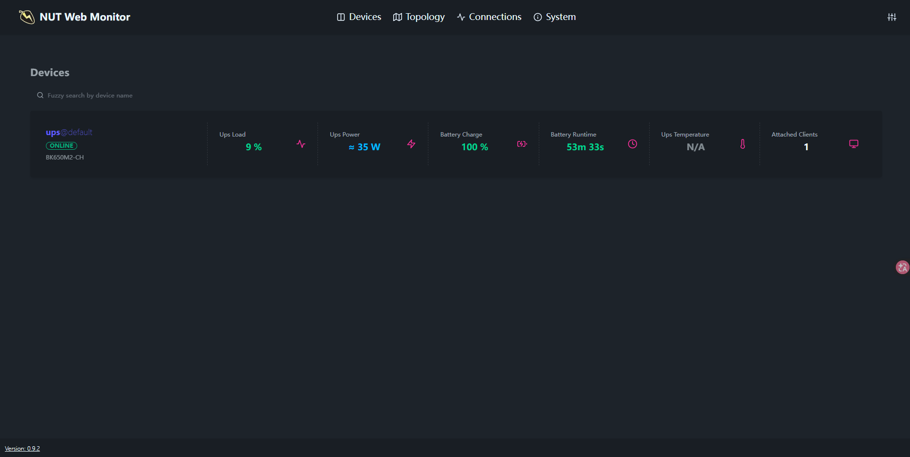
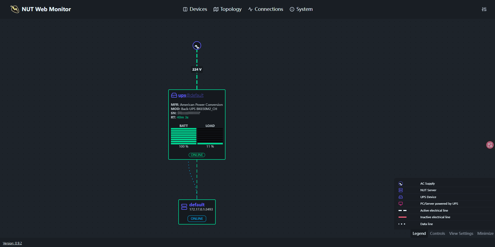
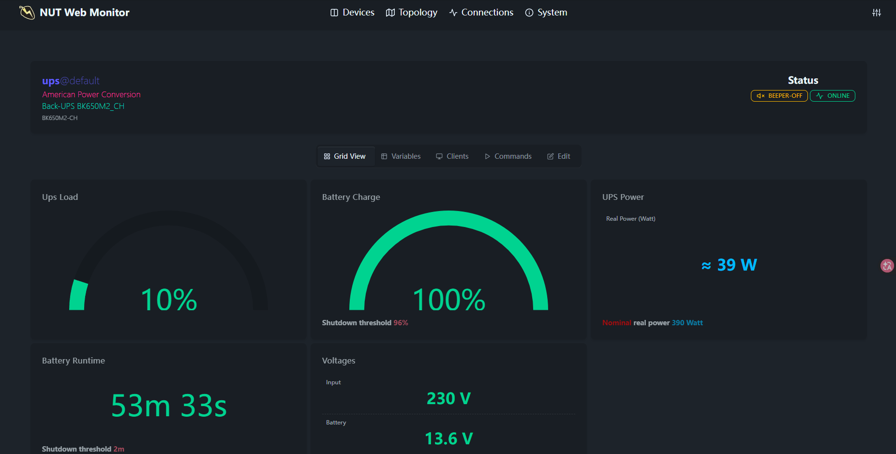
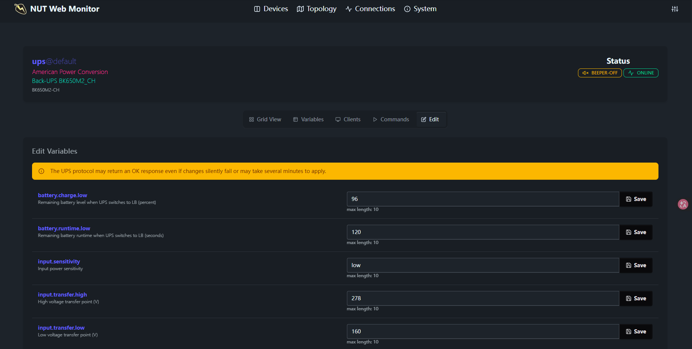
如果是多个 UPS 连接，可以参考：https://github.com/SuperioOne/nut_webgui/blob/master/docs/examples/09_multiple_nut_connection.md
# 总结
先说结论：
个人比较喜欢使用 nut_webui ，因为作为 Web-UI 能显示的 UPS 的信息该有的都有，也比较现代化，资源占用也小。
nut-webui 是资源占用最小的，适合低端硬件，当然画面风格可能看起来比较传统，但是如果你是开发人员，可以重制 .html 网页风格。
PeaNUT 占用相对有点高，并且与其它较之相比没什么突出的功能，算是里面最不想推荐的。
Nutify 在这里算是全能选手了，因此在资源占用方面不值一提，毕竟它还支持 Email 通知、电费统计、碳排量、多用户安全登录等操作，这是其它所没有的。
资源占用情况：
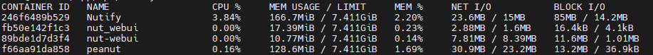
镜像容量：
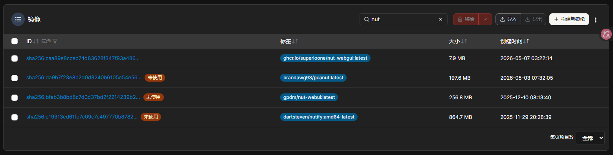
# Other
其它杂七杂八的知识拓展参考：
https://zackreed.me/installing-nut-on-ubuntu/
https://networkupstools.org/docs/man/apcsmart.html
https://forum.openmediavault.org/index.php?thread/54576-going-deeper-into-nut/